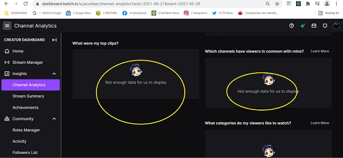

Acodaar is me, as a casual Twitch Streamer.
Since January 2021 I've been exploring the streaming Platform TWITCH. As part of my investigations I became an indiviual Streamer. I have a Twitch site under the username ACODAAR (derived from " I am a coder" and tweaked to sound exotic ) and have done streams of myself building projects with the Unity Game engine.
ASK PHASE - - Two requirements.
1) Identify the specific problem you are trying to solve.
I wish to identify what data sources are available to an individual streamer,
what tools can be appropriate to the aquired data, and what knowledge can be gained from that analysis.
2) Consider key stakeholders.
The key stakeholder is a single streamer with the characteristics of a few exploratory streams, but access to what the host, Twitch provides all registered streamers directly both in raw data and a propriatory on site analysis package.
:
Main Source of Data used.
For Acodaar:
The data analysis on Twitch with Twitch Dashboard was limited due to my limited streams.
Data sources were non existant from the Twitch API as I do not want to register as a Third Party Twitch developer and initiate an external website.
Data sources from Third Party delevoplers were non existant for Acodaar due to them
having a threshold of activity, usually 4 to 10 "followerers". I had not met this
and their tracking had not commenced.

Was able to download a file in Excel format. Columns A to AK. That's 37 tracked statistics.
and a quick cut and paste in MS Paint to show where there is some detail.
The process phase of my analysis and issues with :
Bias, credibility, problems with the data, verifying integrity. Data cleaning and manipulation. I imported the CSV files into a spreadsheet. Calculated all column totals.
Eliminated columns with no data and experimented with some sorts
In the analyze phase of my analysis, I explored with Python and the numerous libraries available for anysis and ploting.
I tried some things with numpy, pandas, matplotlib, plotley and seaborn. Some examples follow showing some problems
I visited Tableau Public and referenced my April Acodaar data. Although my explorations were pretty I had a problem with the dates listing alphabetically. So all the Fridays were bunched at the beginning. Here's some examples of my explorations.

I imported the Twitch file for my most active 30 days, April 2021 into RStudio and created some data visualizations. I ensured my data’s integrity and confirmed that it was clean and ready to analyze by reviewing the dates I streamed , after all, I was the source of this data. It was as I remember.
These visualizations reflected my findings, data story, and memory. I kept them clean and simple.1.
2.
3.
Conclusions:
The anlysis of the data helped confirm my decisions and orient me as to the process. I had found it awkward concentrating on my work and monitering the chat. Doing neither well, I discontinued after about 2 weeks. Live coding is not a big draw on Twitch and now I know why. I adjusted, coding off screen and posting clips of my finished bits.
I still seach for a successful new use case using Twitch for the 50 plus demographic, but now proceed with an insider's experience and knowlege.